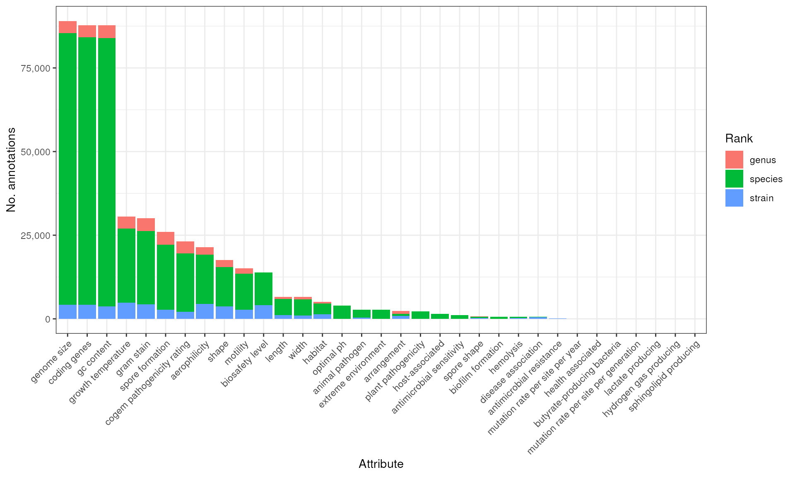
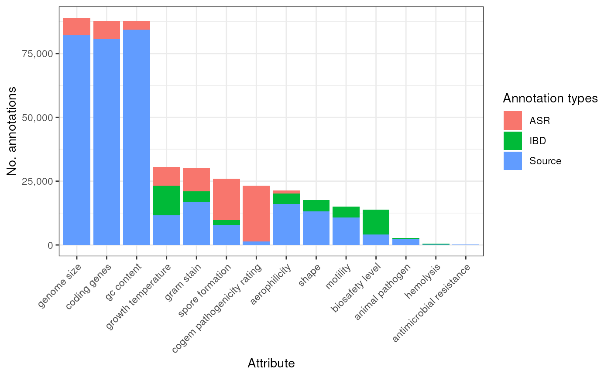
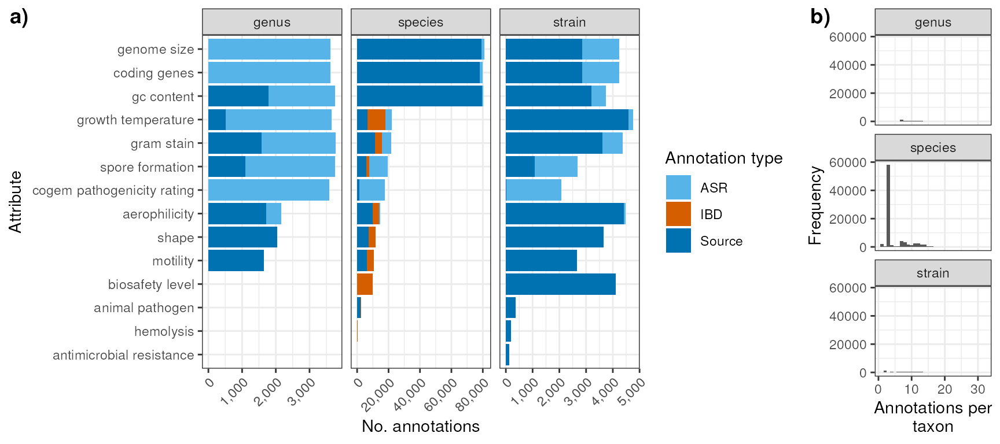
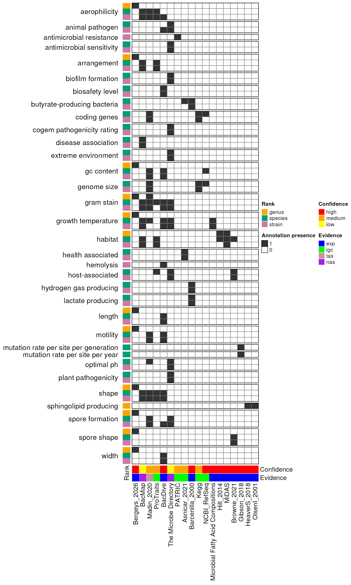

Data integration and stats
Source:vignettes/articles/data_integration_and_stats.Rmd
data_integration_and_stats.Rmd
library(bugphyzzAnalyses)
library(bugphyzz)
library(dplyr)
library(taxPPro)
library(ggplot2)
library(forcats)
library(ggpubr)
library(taxPPro)
library(tidyr)
library(ComplexHeatmap)
library(purrr)
library(forcats)
library(ggbreak)
library(tibble)
library(patchwork)
library(grid)
library(cowplot)Bugphyzz data
## importBugphyzz() keeps an attribute's imputed (ASR) annotations when the
## lower 95% bound of its cross-validated kappa is at least 0.7 (R2 0.5 for
## numeric attributes) and the row's Score is at least 0.5: bugphyzzExports
## ADR 0006, in bugphyzz since 1.7.15. The exported files are already filtered
## the same way.
bp <- importBugphyzz(version = params$bugphyzz_version) |>
map(~ mutate(.x, NCBI_ID = as.character(NCBI_ID)))
## The installed bugphyzz ships the validation tables of the release it
## defaults to, so only other releases need their own tables
bugphyzz_default <- tryCatch(
eval(formals(bugphyzz::importBugphyzz)$version),
error = function(e) NA_character_
)
## Cross-validation table (taxPProValidation): the installed package's copy
## unless params$validation_tsv points to another version
validation <- if (nzchar(params$validation_tsv)) {
readr::read_tsv(params$validation_tsv, show_col_types = FALSE)
} else {
if (!params$bugphyzz_version %in% c("devel", bugphyzz_default)) {
warning(
"validation_tsv is empty, so Figure 2 and the attributes table use ",
"the validation_summary.tsv shipped with bugphyzz ",
packageVersion("bugphyzz"), ", which may not be the version the ",
params$bugphyzz_version, " release was filtered with."
)
}
## bugphyzz exports no accessor for these tables
readr::read_tsv(
system.file("extdata", "validation_summary.tsv", package = "bugphyzz"),
show_col_types = FALSE
)
}
## Per-attribute scores (ADR 0006): these decide which attributes are imputed
validation_attr <- if (nzchar(params$validation_attributes_tsv)) {
readr::read_tsv(params$validation_attributes_tsv, show_col_types = FALSE)
} else {
if (!params$bugphyzz_version %in% c("devel", bugphyzz_default)) {
warning(
"validation_attributes_tsv is empty, so the imputation decisions ",
"come from the table shipped with bugphyzz ",
packageVersion("bugphyzz"), ", which may not be the version the ",
params$bugphyzz_version, " release was filtered with."
)
}
f <- system.file("extdata", "validation_attributes.tsv", package = "bugphyzz")
if (!nzchar(f)) {
stop(
"The installed bugphyzz has no extdata/validation_attributes.tsv; ",
"it needs version 1.7.15 or later, or set validation_attributes_tsv."
)
}
readr::read_tsv(f, show_col_types = FALSE)
}
## The threshold follows the metric, not a list of attribute names: R2 for
## numeric attributes, kappa (weighted where the states are ordered) for the
## rest. `imputed` is the attribute-level decision; individual imputed rows
## must also have Score >= 0.5, which importBugphyzz() applies.
validation_attr <- validation_attr |>
filter(rank == "all") |>
mutate(
threshold = ifelse(metric == "r2", 0.5, 0.7),
imputed = score_lcb >= threshold
)
stopifnot(all(validation_attr$metric %in% c("r2", "kappa", "weighted kappa")))
length(bp)
#> [1] 36
myDataTable(data.frame(attributes = names(bp)), page_len = length(bp))Totals
## Number of unique taxa
n_taxa <- map(bp, ~ .x$NCBI_ID) |>
unlist(use.names = FALSE) |>
unique() |>
length()
## Number of annotations
n_annotations <- map_int(bp, nrow) |>
sum()
## Number of physiologies/attribute groups
n_attr <- length(bp)
## Number of sources
n_sources <- map(bp, ~ {
unique(.x$Attribute_source) |>
{\(y) y[!is.na(y)]}()
}) |>
unlist(recursive = TRUE, use.names = FALSE) |>
unique() |>
length()
## Number of annotations from sources
n_annotations_source <- map_int(bp, ~ {
.x |>
filter(!is.na(Attribute_source)) |>
nrow()
}) |>
sum()
## Number of annotations IBD
n_annotations_ibd <- map_int(bp, ~ {
.x |>
filter(Evidence == "tax") |>
nrow()
}) |>
sum()
## Number of annotations ASR
n_annotations_asr <- map_int(bp, ~ {
.x |>
filter(Evidence == "asr") |>
nrow()
}) |>
sum()
## Number of
num_vs_dis_n <- map_chr(bp, ~ {
unique(.x$Attribute_type)
}) |>
table() |>
as.data.frame() |>
set_names(c("name", "n")) |>
mutate(name = ifelse(name == "numeric", "numeric", "discrete")) |>
count(name, wt = n)
attr_asr_default_names <- map(bp, ~ {
unique(.x$Evidence)
}) |>
keep(~ "asr" %in% .x) |>
names()
attr_asr_default <- length(attr_asr_default_names)
attr_asr_all <- validation_attr |>
pull(physiology) |>
unique() |>
length()
count_summary_tbl <- tibble::tribble(
~name, ~n,
"Number of taxa", n_taxa,
"Number of annotations", n_annotations,
"Number of attributes", n_attr,
"Number of discrete attributes", pull(filter(num_vs_dis_n, name == "discrete"),n),
"Number of sources", n_sources,
"Number of annoations from sources", n_annotations_source,
"Number of IBD annotations", n_annotations_ibd,
"Number of annotations imputed through ASR", n_annotations_asr,
"Number of attributes with imputed (ASR) annotations", attr_asr_default,
"Number of attributes cross-validated for imputation", attr_asr_all
)
myDataTable(count_summary_tbl)Totals by rank
valid_ranks <- c(
"superkingdom", "phylum", "class", "order", "family",
"genus", "species", "strain"
)
attr_order <- names(sort(map_int(bp, nrow), decreasing = TRUE))
counts_rank <- bp |>
map(~ count(.x, Attribute, Rank)) |>
bind_rows() |>
mutate(Attribute = factor(Attribute, levels = attr_order)) |>
mutate(Rank = factor(Rank, levels = valid_ranks))
p_counts_rank <- counts_rank |>
ggplot(aes(Attribute, n)) +
geom_col(aes(fill = Rank), position = "stack") +
scale_fill_discrete(name = "Rank") +
scale_y_continuous(labels = scales::comma) +
labs(
x = "Attribute", y = "No. annotations"
) +
theme_bw() +
theme(
axis.text.x = element_text(angle = 45, hjust = 1)
)
p_counts_rank
Total number of annotations by type of Evidence
count_types <- bp |>
map (~{
.x |>
mutate(
Type = case_when(
Evidence %in% c("exp", "igc", "nas", "tas") ~ "Source",
Evidence == "asr" ~ "ASR",
Evidence == "tax" ~ "IBD"
)
) |>
count(Attribute, Type)
}) |>
bind_rows()
keep_attrs <- split(count_types, count_types$Attribute) |>
keep( ~ {
types <- unique(.x$Type)
"IBD" %in% types | "ASR" %in% types
}) |>
names()
p_count_types <- count_types |>
filter(Attribute %in% keep_attrs) |>
mutate(Attribute = factor(Attribute, levels = attr_order)) |>
ggplot(aes(Attribute, n)) +
geom_col(aes(fill = Type), position = "stack") +
labs(
x = "Attribute", y = "No. annotations"
) +
scale_fill_discrete(name = "Annotation types") +
scale_y_continuous(labels = scales::comma) +
theme_bw() +
theme(axis.text.x = element_text(angle = 45, hjust = 1))
p_count_types
Figure: 10-fold cross-validation and counts per evidence type (species)
Create plot of MMC values for discrete attributes:
# val_fname <- "/home/samuelgamboa/Projects/taxPProValidation/validation_summary.tsv"
# val <- readr::read_tsv(val_fname, show_col_types = FALSE) |>
# filter(rank == "all")
val <- validation |>
filter(rank == "all") # Validation including taxa of mixed ranks as input (keyword is "all")
## with_ties = FALSE: two values of one attribute can share the top score
## (COGEM ratings 1 and 2 in v1.0.7), which would duplicate a factor level
dis_phys_names <- val |>
filter(!is.na(mcc_mean)) |>
group_by(physiology) |>
slice_max(order_by = mcc_mean, n = 1, with_ties = FALSE) |>
arrange(-mcc_mean) |>
pull(physiology)
pValDis <- val |> # plot Validation Discrete
filter(!is.na(mcc_mean)) |>
mutate(ltp_bp = ifelse(is.na(ltp_bp), ltp_bp_phys, ltp_bp)) |>
mutate(physiology = factor(physiology, levels = dis_phys_names)) |>
mutate(
guide_col = ifelse(
as.character(physiology) == attribute,
as.character(physiology),
paste0(as.character(physiology), "|", attribute)
)
) |>
arrange(physiology, mcc_mean) |>
ggplot(aes(forcats::fct_inorder(guide_col), mcc_mean, group = attribute)) +
geom_errorbar(
aes(ymin = mcc_mean - mcc_sd, ymax = mcc_mean + mcc_sd),
position = position_dodge(0.5),
width = 0, linewidth = 0.3
) +
geom_hline(
yintercept = 0.7, linetype = "dotdash", linewidth = 0.2,
color = "red"
) +
geom_point(
aes(size = ltp_bp),
shape = 23, position = position_dodge(0.5), fill = "white"
# size = 2
) +
scale_size_continuous(name = "tips annotated") +
scale_y_continuous(
breaks = round(
seq(
min(val$mcc_mean - val$mcc_sd, na.rm = TRUE) - 0.1,
max(val$mcc_mean + val$mcc_sd, na.rm = TRUE) + 0.1,
0.2),
1)
) +
labs(
y = "Matthews Correlation Coefficient",
x = "Attribute|Attribute value"
) +
theme_bw() +
theme(
panel.grid.minor = element_blank()
) +
coord_flip()Create plot of R-squared values for continuous attributes:
num <- val |>
filter(!is.na(r2_mean))
num_phys_names <- num |>
group_by(physiology) |>
slice_max(order_by = r2_mean, n = 1, with_ties = FALSE) |>
arrange(-r2_mean) |>
pull(physiology)
pValNum <- val |> # plot Validation Numeric attributes
filter(!is.na(r2_mean)) |>
mutate(ltp_bp = ifelse(is.na(ltp_bp), ltp_bp_phys, ltp_bp)) |>
ggplot(aes(reorder(physiology, -r2_mean), r2_mean, group = attribute)) +
geom_errorbar(
aes(ymin = r2_mean - r2_sd, ymax = r2_mean + r2_sd),
position = position_dodge(0.5),
width = 0, linewidth = 0.3
) +
geom_hline(
yintercept = 0.5, linetype = "dotdash", linewidth = 0.2,
color = "red"
) +
geom_point(
aes(size = ltp_bp),
shape = 23, position = position_dodge(0.5), fill = "white"
# size = 2
) +
scale_size_continuous(name = "tips annotated") +
scale_y_continuous(
breaks = round(seq(min(val$r2_mean - val$r2_sd, na.rm = TRUE) - 0.1, max(val$r2_mean + val$r2_sd, na.rm = TRUE) + 0.1, 0.2), 1)
) +
labs(
y = "R-squared",
x = "Attribute"
) +
theme_bw() +
theme(
panel.grid.minor = element_blank()
) +
coord_flip()Crete plot of counts of annotations at the species level. Stack colors/columns with colors according to Evidence type of the annotations: ASR, IBD, Source. Only include attributes that were expanded with IBD or ASR.
counts_type_sp <- bp |>
map(~ {
.x |>
filter(Rank == "species") |>
mutate(
Evidence = case_when(
Evidence == "tax" ~ "IBD",
Evidence == "asr" ~ "ASR",
Evidence %in% c("exp", "igc", "tas", "nas") ~ "Source",
TRUE ~ Evidence
)
) |>
count(Attribute, Evidence) |>
mutate(total = sum(n))
}) |>
bind_rows()
p_counts_sp <- counts_type_sp |>
filter(Attribute %in% keep_attrs) |>
mutate(Evidence = factor(Evidence, levels = c("ASR", "IBD", "Source"))) |>
ggplot(aes(reorder(Attribute, total), n)) +
geom_col(aes(fill = Evidence), position = "stack") +
labs(
y = "No. annotations (species)", x = "Attribute"
) +
scale_fill_manual(
values = c("#56B4E9", "#D55E00", "#0072B2"),
name = "Annotation type"
) +
scale_y_continuous(labels = scales::comma) +
theme_bw() +
coord_flip()Merge the plots from the validation results and the counts of annotations
myPlot2 <- plot_grid(
pValNum, p_counts_sp, ncol = 1,
labels = c("b)", "c)"),
rel_heights = c(0.2, 0.8), align = "v"
)
myPlot1 <- plot_grid(
pValDis, myPlot2,
labels = c("a)"),
rel_widths = c(0.55, 0.45), axis = "b"
)
myPlot1
myDataTable(counts_type_sp)Supplementary Figure: Counts of annotations for genus, spescies, and strain and number of annotations per taxon
Number of annotations at the genus, species, and strain level:
counts_type_2 <- bp |>
map(~ {
.x |>
filter(Rank %in% c("genus", "species", "strain")) |>
mutate(
Evidence = case_when(
Evidence == "tax" ~ "IBD",
Evidence == "asr" ~ "ASR",
Evidence %in% c("exp", "igc", "tas", "nas") ~ "Source",
TRUE ~ Evidence
)
) |>
count(Attribute, Rank, Evidence) |>
mutate(total = sum(n))
}) |>
bind_rows()
p_counts_2 <- counts_type_2 |>
filter(Attribute %in% keep_attrs) |>
mutate(Evidence = factor(Evidence, levels = c("ASR", "IBD", "Source"))) |>
ggplot(aes(reorder(Attribute, total), n)) +
geom_col(aes(fill = Evidence), position = "stack") +
labs(
y = "No. annotations", x = "Attribute"
) +
scale_fill_manual(
values = c("#56B4E9", "#D55E00", "#0072B2"),
name = "Annotation type"
) +
scale_y_continuous(labels = scales::comma) +
theme_bw() +
facet_wrap(~Rank, nrow = 1, scales = "free_x") +
theme(
axis.text.x = element_text(angle = 45, hjust = 1)
) +
coord_flip()Frequency of number of annotations per single taxon:
n_annot_tax <- bp |>
map(~ {
attr_type <- unique(.x$Attribute_type)
.x |>
filter(Rank %in% c("strain", "species", "genus")) |>
select(Attribute, NCBI_ID, Rank)
}) |>
bind_rows() |>
count(NCBI_ID, Rank)
p_n_annot_tax <- n_annot_tax |>
ggplot() +
geom_histogram(aes(x = n), binwidth = 1) +
labs(
x = "Annotations per\ntaxon",
y = "Frequency"
) +
facet_wrap(~Rank, ncol = 1) +
theme_bw()Merge plots above for supplementary figure:
suppN <- plot_grid(
p_counts_2, p_n_annot_tax,
labels = c("a)", "b)"),
rel_widths = c(0.8, 0.20),
nrow = 1
)
suppN
Figure: Heatmap Sources x Attribute x Rank
mySources <- bp |>
map(~ {
.x |>
select(Attribute_source, Confidence_in_curation, Evidence) |>
drop_na() |>
rename(Confidence = Confidence_in_curation)
}) |>
bind_rows() |>
distinct() |>
mutate(
Confidence_color = case_when(
Confidence == "high" ~ "red",
Confidence == "medium" ~ "orange",
Confidence == "low" ~ "yellow"
),
Evindence_color = case_when(
Evidence == "exp" ~ "blue",
Evidence == "igc" ~ "green",
Evidence == "tas" ~ "brown4",
Evidence == "nas" ~ "purple"
),
Confidence = factor(Confidence, levels = c("high", "medium", "low")),
Evidence = factor(Evidence, levels = c("exp", "igc", "tas", "nas"))
)
source_attribute_rank <- bp |>
map(~{
.x |>
filter(!is.na(Attribute_source)) |>
count(Attribute, Attribute_source, Rank)
}) |>
bind_rows()
mat <- source_attribute_rank |>
arrange(Attribute, Rank) |>
unite(col = "Attribute|Rank", Attribute, Rank, sep = "|") |>
pivot_wider(
names_from = "Attribute_source", values_from = "n"
) |>
tibble::column_to_rownames(var = "Attribute|Rank") |>
as.data.frame() |>
as.matrix()
mat[is.na(mat)] <- 0
mat[mat > 0] <- 1
color_fun <- circlize::colorRamp2(
breaks = c(0, 1), colors = c('white', "gray20")
)
rankAnnotationsDF <- data.frame(
Rank = sub("^(.*\\|)(\\w+)$", "\\2", rownames(mat))
)
rank_colors =list(
Rank = c("genus" = "orange","species" = "#009E73", "strain" = "#CC79A7")
)
row_ha <- rowAnnotation(
df = rankAnnotationsDF, col = rank_colors, width = unit(5, "cm")
)
mySources <- mySources[match(colnames(mat), mySources$Attribute_source),]
myColColors <- list(
Confidence = c(high = "red", medium = "orange", low = "yellow"),
Evidence = c(exp = "blue", igc = "green", tas = "pink3", nas = "purple")
)
column_ha <- columnAnnotation(
df = mySources[, c("Confidence", "Evidence")],
col = myColColors,
height = unit(5, "cm")
)
splits_attrs <- sub("^(.*)\\|\\w+$", "\\1", rownames(mat))
hp <- Heatmap(
matrix = mat,
cluster_rows = FALSE,
cluster_columns = FALSE,
show_row_names = FALSE,
show_heatmap_legend = TRUE,
col = color_fun(c(0, 1)),
name = "Annotation presence",
left_annotation = row_ha,
bottom_annotation = column_ha,
row_split = splits_attrs,
row_title_rot = 0,
heatmap_legend_param = list(
color_bar = "discrete",
border = "black"
),
border = TRUE,
rect_gp = gpar(col = "gray50", lwd = 1),
column_names_max_height = unit(7, "cm")
)
hp
Table/Sup Table: Sources
sources_fname <- system.file(
"extdata", "attribute_sources.tsv", package = "bugphyzz", mustWork = TRUE
)
sources <- read.table(
file = sources_fname,
header = TRUE, sep = "\t", quote = ""
) |>
rename(
`Source (short)` = Attribute_source,
`Confidence in curation` = Confidence_in_curation,
`Source (long)` = full_source
)
myDataTable(sources, page_len = nrow(sources))Supplementary Table: attributes
One row per attribute: type, unit, number of sources, annotations by
evidence (curated from a source, IBD = inherited from strains by
taxonomy, ASR), taxa, and the cross-validation score at rank “all” that
decides whether the attribute is imputed: the lower 95% bound of its
distance-matched Cohen’s kappa, or of its R2 for numeric attributes
(bugphyzzExports ADR 0006). Attributes at or above the threshold, 0.7
and 0.5, carry imputed annotations in the release, except individual
rows whose Score is below 0.5.
val_str <- validation_attr |>
mutate(
`Validation (rank all)` = sprintf(
"%s %.2f (lower bound %.2f, %s)", metric, score_mean, score_lcb,
ifelse(imputed, "imputed", "not imputed")
),
Attribute = tolower(physiology) # the export lowercases attribute names
) |>
select(Attribute, `Validation (rank all)`)
supp_attr_tbl <- bp |>
map(~ {
.x |>
summarise(
Type = unique(Attribute_type)[1],
Unit = if ("Unit" %in% names(.x)) paste(unique(na.omit(Unit)), collapse = ";") else "",
Sources = n_distinct(Attribute_source[!is.na(Attribute_source)]),
Curated = sum(Evidence %in% c("exp", "igc", "tas", "nas")),
IBD = sum(Evidence == "tax"),
ASR = sum(Evidence == "asr"),
Total = n(),
Taxa = n_distinct(NCBI_ID)
)
}) |>
bind_rows(.id = "Attribute") |>
mutate(.key = tolower(Attribute)) |>
left_join(val_str, by = c(".key" = "Attribute")) |>
select(-.key) |>
arrange(desc(Total))
## every annotation is curated, IBD or ASR, and every attribute with ASR
## annotations has a validation score to show for them
stopifnot(
all(supp_attr_tbl$Curated + supp_attr_tbl$IBD + supp_attr_tbl$ASR == supp_attr_tbl$Total),
!any(supp_attr_tbl$ASR > 0 & is.na(supp_attr_tbl$`Validation (rank all)`))
)
myDataTable(supp_attr_tbl, page_len = nrow(supp_attr_tbl))Supplementary Table: agreement between sources
The release credits each value to one source, so it cannot show how
often sources overlap. This table is computed from the curated inputs
instead: physiologies() reads every source before conflicts
are resolved. The programmatic sources come from sources/
of bugphyzzExports at params$sources_ref; the curation
sheets are read as they are today and cannot be pinned. As in the
export, the 2020 Bergey’s Manual rows and the rows in
sources/sheet_overrides.tsv are left out.
Only attributes with mutually exclusive states are compared (binary and multistate-intersection). For each attribute, a taxon counts once per source, with the set of states that source gives it. “Identical” means all sources give the same set; “share a state” means at least one state is common to all of them. The first table matches on the NCBI taxid as curated; in the second, strain rows are moved to their parent species first, so that strain-level sources (BacDive) meet species-level ones, and a source’s states for a species are those of all its strains.
sources_base <- paste0(
"https://raw.githubusercontent.com/waldronlab/bugphyzzExports/",
params$sources_ref, "/sources/"
)
old_opt <- options(bugphyzz.sourcesBaseUrl = sources_base)
phys <- physiologies("all")
options(old_opt)
sheet_ov <- readr::read_tsv(
paste0(sources_base, "sheet_overrides.tsv"),
col_types = readr::cols(.default = "c")
)
curated_inputs <- map(phys, ~ {
.x |>
mutate(across(everything(), as.character)) |>
select(any_of(c(
"NCBI_ID", "Rank", "Parent_NCBI_ID", "Parent_rank", "Attribute",
"Attribute_value", "Attribute_group", "Attribute_type",
"Attribute_source", "Frequency"
)))
}) |>
bind_rows() |>
filter(
!is.na(NCBI_ID), NCBI_ID != "", !is.na(Attribute_source),
Attribute_source != "Bergey's Manual",
Attribute_type %in% c("binary", "multistate-intersection"),
!Frequency %in% "never"
) |>
anti_join(
sheet_ov,
by = c(
"Attribute_group" = "physiology", "NCBI_ID", "Attribute",
"Attribute_value", "Attribute_source"
)
) |>
## a multistate row with FALSE says a state is absent; only stated
## states are compared
filter(Attribute_type == "binary" | Attribute_value == "TRUE") |>
mutate(state = ifelse(Attribute_type == "binary", Attribute_value, Attribute))
sourceAgreement <- function(dat) {
per_source <- dat |>
group_by(Attribute_group, NCBI_ID, Attribute_source) |>
summarise(states = list(sort(unique(state))), .groups = "drop")
per_taxon <- per_source |>
group_by(Attribute_group, NCBI_ID) |>
summarise(
n_sources = n(),
identical = length(unique(map_chr(states, paste, collapse = "|"))) == 1,
share = length(Reduce(intersect, states)) > 0,
.groups = "drop"
)
per_taxon |>
group_by(Attribute = Attribute_group) |>
summarise(
Taxa = n(),
`Taxa with 2+ sources` = sum(n_sources >= 2),
`Taxa with 3+ sources` = sum(n_sources >= 3),
Identical = sum(identical & n_sources >= 2),
`Share a state` = sum(share & n_sources >= 2),
.groups = "drop"
) |>
filter(`Taxa with 2+ sources` > 0) |>
mutate(
`Identical (%)` = round(100 * Identical / `Taxa with 2+ sources`, 1),
`Share a state (%)` = round(100 * `Share a state` / `Taxa with 2+ sources`, 1),
`No state shared (%)` = round(100 - `Share a state (%)`, 1)
) |>
arrange(desc(`Taxa with 2+ sources`))
}
agreement_taxid <- sourceAgreement(curated_inputs)
agreement_species <- curated_inputs |>
mutate(
to_species = Rank %in% "strain" & Parent_rank %in% "species" &
!is.na(Parent_NCBI_ID),
NCBI_ID = ifelse(to_species, Parent_NCBI_ID, NCBI_ID)
) |>
sourceAgreement()
stopifnot(
all(agreement_taxid$Identical <= agreement_taxid$`Share a state`),
all(agreement_species$Identical <= agreement_species$`Share a state`)
)Matched on the taxid as curated:
myDataTable(agreement_taxid, page_len = nrow(agreement_taxid))Strains moved to their parent species:
myDataTable(agreement_species, page_len = nrow(agreement_species))Sources are not all independent: some compile others, so agreement is an upper bound on independent confirmation. Rows without a rank in the curated inputs stay at their own taxid in the second table.
Session information
sessioninfo::session_info()
#> ─ Session info ───────────────────────────────────────────────────────────────
#> setting value
#> version R version 4.4.1 (2024-06-14)
#> os Ubuntu 22.04.4 LTS
#> system x86_64, linux-gnu
#> ui X11
#> language en
#> collate en_US.UTF-8
#> ctype en_US.UTF-8
#> tz Etc/UTC
#> date 2026-11-12
#> pandoc 3.2 @ /usr/bin/ (via rmarkdown)
#> quarto 1.4.555 @ /usr/local/bin/quarto
#>
#> ─ Packages ───────────────────────────────────────────────────────────────────
#> package * version date (UTC) lib source
#> abind 1.4-8 2024-09-12 [1] RSPM (R 4.4.0)
#> aplot 0.3.2 2026-09-22 [1] RSPM (R 4.4.0)
#> backports 1.5.1 2026-04-03 [1] RSPM (R 4.4.0)
#> Biobase * 2.64.0 2024-04-30 [1] Bioconductor 3.19 (R 4.4.1)
#> BiocFileCache 2.12.0 2024-04-30 [1] Bioconductor 3.19 (R 4.4.1)
#> BiocGenerics * 0.50.0 2024-04-30 [1] Bioconductor 3.19 (R 4.4.1)
#> bit 4.6.0 2025-03-06 [1] RSPM (R 4.4.0)
#> bit64 4.8.6 2026-09-01 [1] RSPM (R 4.4.0)
#> blob 1.3.0 2026-01-14 [1] RSPM (R 4.4.0)
#> broom 1.0.13 2026-05-14 [1] RSPM (R 4.4.0)
#> bslib 0.12.0 2026-08-04 [1] RSPM (R 4.4.0)
#> bugphyzz * 1.7.20 2026-11-12 [1] Github (waldronlab/bugphyzz@3fe6b7e)
#> bugphyzzAnalyses * 0.1.19 2026-11-12 [1] local
#> cachem 1.1.0 2024-05-16 [1] RSPM (R 4.4.0)
#> Cairo 1.7-0 2025-10-29 [1] RSPM (R 4.4.0)
#> car 3.1-5 2026-02-03 [1] RSPM (R 4.4.0)
#> carData 3.0-6 2026-01-30 [1] RSPM (R 4.4.0)
#> circlize 0.4.18 2026-04-04 [1] RSPM (R 4.4.0)
#> cli 3.6.6 2026-04-09 [1] RSPM (R 4.4.0)
#> clue 0.3-68 2026-03-26 [1] RSPM (R 4.4.0)
#> cluster 2.1.6 2023-12-01 [2] CRAN (R 4.4.1)
#> codetools 0.2-20 2024-03-31 [2] CRAN (R 4.4.1)
#> colorspace 2.1-4 2026-10-08 [1] RSPM (R 4.4.0)
#> ComplexHeatmap * 2.20.0 2024-04-30 [1] Bioconductor 3.19 (R 4.4.1)
#> cowplot * 1.2.0 2025-07-07 [1] RSPM (R 4.4.0)
#> crayon 1.5.3 2024-06-20 [1] RSPM (R 4.4.0)
#> crosstalk 1.2.2 2025-08-26 [1] RSPM (R 4.4.0)
#> curl 8.1.0 2026-10-14 [1] RSPM (R 4.4.0)
#> DBI 1.3.0 2026-02-25 [1] RSPM (R 4.4.0)
#> dbplyr 2.6.0 2026-06-17 [1] RSPM (R 4.4.0)
#> DelayedArray 0.30.1 2024-05-07 [1] Bioconductor 3.19 (R 4.4.1)
#> desc 1.4.3 2023-12-10 [1] RSPM (R 4.4.0)
#> digest 0.6.39 2025-11-19 [1] RSPM (R 4.4.0)
#> doParallel 1.0.17 2022-02-07 [1] RSPM (R 4.4.0)
#> dplyr * 1.2.1 2026-04-03 [1] RSPM (R 4.4.0)
#> DT 0.34.0 2025-09-02 [1] RSPM (R 4.4.0)
#> evaluate 1.0.5 2025-08-27 [1] RSPM (R 4.4.0)
#> farver 2.1.2 2024-05-13 [1] RSPM (R 4.4.0)
#> fastmap 1.2.0 2024-05-15 [1] RSPM (R 4.4.0)
#> filelock 1.0.3 2023-12-11 [1] RSPM (R 4.4.0)
#> forcats * 1.0.1 2025-09-25 [1] RSPM (R 4.4.0)
#> foreach 1.5.2 2022-02-02 [1] RSPM (R 4.4.0)
#> Formula 1.2-6 2026-08-03 [1] RSPM (R 4.4.0)
#> fs 2.1.0 2026-04-18 [1] RSPM (R 4.4.0)
#> generics 0.1.4 2025-05-09 [1] RSPM (R 4.4.0)
#> GenomeInfoDb * 1.40.1 2024-05-24 [1] Bioconductor 3.19 (R 4.4.1)
#> GenomeInfoDbData 1.2.12 2024-10-27 [1] Bioconductor
#> GenomicRanges * 1.56.2 2024-10-09 [1] Bioconductor 3.19 (R 4.4.1)
#> GetoptLong 1.1.1 2026-04-08 [1] RSPM (R 4.4.0)
#> ggbreak * 0.2.2 2026-09-22 [1] RSPM (R 4.4.0)
#> ggfun 0.2.2 2026-10-09 [1] RSPM (R 4.4.0)
#> ggplot2 * 4.0.3 2026-04-22 [1] RSPM (R 4.4.0)
#> ggplotify 0.1.4 2026-10-12 [1] RSPM (R 4.4.0)
#> ggpubr * 1.0.0 2026-07-06 [1] RSPM (R 4.4.0)
#> ggsignif 0.6.4 2022-10-13 [1] RSPM (R 4.4.0)
#> GlobalOptions 0.1.4 2026-04-08 [1] RSPM (R 4.4.0)
#> glue 1.8.1 2026-04-17 [1] RSPM (R 4.4.0)
#> gridGraphics 0.5-1 2020-12-13 [1] RSPM (R 4.4.0)
#> gtable 0.3.6 2024-10-25 [1] RSPM (R 4.4.0)
#> hms 1.1.4 2025-10-17 [1] RSPM (R 4.4.0)
#> htmltools 0.5.9 2025-12-04 [1] RSPM (R 4.4.0)
#> htmlwidgets 1.6.4 2023-12-06 [1] RSPM (R 4.4.0)
#> httr 1.4.9 2026-09-01 [1] RSPM (R 4.4.0)
#> httr2 1.3.0 2026-07-13 [1] RSPM (R 4.4.0)
#> IRanges * 2.38.1 2024-07-03 [1] Bioconductor 3.19 (R 4.4.1)
#> iterators 1.0.14 2022-02-05 [1] RSPM (R 4.4.0)
#> jquerylib 0.1.4 2021-04-26 [1] RSPM (R 4.4.0)
#> jsonlite 2.0.0 2025-03-27 [1] RSPM (R 4.4.0)
#> knitr 1.52 2026-09-06 [1] RSPM (R 4.4.0)
#> labeling 0.4.3 2023-08-29 [1] RSPM (R 4.4.0)
#> lattice 0.22-6 2024-03-20 [2] CRAN (R 4.4.1)
#> lifecycle 1.0.5 2026-01-08 [1] RSPM (R 4.4.0)
#> magick 2.9.1 2026-02-28 [1] RSPM (R 4.4.0)
#> magrittr 2.0.5 2026-04-04 [1] RSPM (R 4.4.0)
#> Matrix 1.7-0 2024-04-26 [2] CRAN (R 4.4.1)
#> MatrixGenerics * 1.16.0 2024-04-30 [1] Bioconductor 3.19 (R 4.4.1)
#> matrixStats * 1.5.0 2025-01-07 [1] RSPM (R 4.4.0)
#> memoise 2.0.1 2021-11-26 [1] RSPM (R 4.4.0)
#> otel 0.3.0 2026-11-07 [1] RSPM (R 4.4.0)
#> patchwork * 1.3.2 2025-08-25 [1] RSPM (R 4.4.0)
#> pillar 1.11.1 2025-09-17 [1] RSPM (R 4.4.0)
#> pkgconfig 2.0.3 2019-09-22 [1] RSPM (R 4.4.0)
#> pkgdown 2.2.1 2026-07-07 [1] RSPM (R 4.4.0)
#> png 0.1-9 2026-03-15 [1] RSPM (R 4.4.0)
#> purrr * 1.2.2 2026-04-10 [1] RSPM (R 4.4.0)
#> R6 2.6.1 2025-02-15 [1] RSPM (R 4.4.0)
#> ragg 1.5.2 2026-03-23 [1] RSPM (R 4.4.0)
#> rappdirs 0.3.4 2026-01-17 [1] RSPM (R 4.4.0)
#> RColorBrewer 1.1-3 2022-04-03 [1] RSPM (R 4.4.0)
#> Rcpp 1.1.2 2026-07-05 [1] RSPM (R 4.4.0)
#> readr 2.2.0 2026-02-19 [1] RSPM (R 4.4.0)
#> rjson 0.2.23 2024-09-16 [1] RSPM (R 4.4.0)
#> rlang 1.3.0 2026-07-05 [1] RSPM (R 4.4.0)
#> rmarkdown 2.32 2026-09-01 [1] RSPM (R 4.4.0)
#> RSQLite 3.53.3 2026-06-30 [1] RSPM (R 4.4.0)
#> rstatix 1.1.0 2026-07-23 [1] RSPM (R 4.4.0)
#> S4Arrays 1.4.1 2024-05-20 [1] Bioconductor 3.19 (R 4.4.1)
#> S4Vectors * 0.42.1 2024-07-03 [1] Bioconductor 3.19 (R 4.4.1)
#> S7 0.2.2 2026-04-22 [1] RSPM (R 4.4.0)
#> sass 0.4.10 2025-04-11 [1] RSPM (R 4.4.0)
#> scales 1.4.0 2025-04-24 [1] RSPM (R 4.4.0)
#> sessioninfo 1.2.4 2026-06-04 [1] RSPM (R 4.4.0)
#> shape 1.4.6.1 2024-02-23 [1] RSPM (R 4.4.0)
#> SparseArray 1.4.8 2024-05-24 [1] Bioconductor 3.19 (R 4.4.1)
#> stringi 1.8.9 2026-08-04 [1] RSPM (R 4.4.0)
#> stringr 1.6.0 2025-11-04 [1] RSPM (R 4.4.0)
#> SummarizedExperiment * 1.34.0 2024-05-01 [1] Bioconductor 3.19 (R 4.4.1)
#> systemfonts 1.3.2 2026-03-05 [1] RSPM (R 4.4.0)
#> taxPPro * 1.0.1 2026-11-12 [1] Github (waldronlab/taxPPro@4f149c6)
#> textshaping 1.0.5 2026-03-06 [1] RSPM (R 4.4.0)
#> tibble * 3.3.1 2026-01-11 [1] RSPM (R 4.4.0)
#> tidyr * 1.3.2 2025-12-19 [1] RSPM (R 4.4.0)
#> tidyselect 1.2.1 2024-03-11 [1] RSPM (R 4.4.0)
#> tzdb 0.5.0 2025-03-15 [1] RSPM (R 4.4.0)
#> UCSC.utils 1.0.0 2024-04-30 [1] Bioconductor 3.19 (R 4.4.1)
#> vctrs 0.7.3 2026-04-11 [1] RSPM (R 4.4.0)
#> vroom 1.7.1 2026-03-31 [1] RSPM (R 4.4.0)
#> withr 3.0.3 2026-06-19 [1] RSPM (R 4.4.0)
#> xfun 0.62 2026-10-16 [1] RSPM (R 4.4.0)
#> XVector 0.44.0 2024-04-30 [1] Bioconductor 3.19 (R 4.4.1)
#> yaml 2.3.12 2025-12-10 [1] RSPM (R 4.4.0)
#> yulab.utils 0.2.5 2026-08-29 [1] RSPM (R 4.4.0)
#> zlibbioc 1.50.0 2024-04-30 [1] Bioconductor 3.19 (R 4.4.1)
#>
#> [1] /usr/local/lib/R/site-library
#> [2] /usr/local/lib/R/library
#> * ── Packages attached to the search path.
#>
#> ──────────────────────────────────────────────────────────────────────────────